<meta charset="utf-8"><title>11/10のコラム note貼り付け</title>
<style>
/* one column of numbered paste steps; text steps vs image steps differ by marker */
:root{--bg:#F5F4F0;--card:#FFFFFF;--ink:#1D2321;--mute:#5F665F;--line:#DCDAD2;--btn:#1F5FBF;--btnok:#2E8B4F;--img:#E9F3EC;--imgink:#22663B;--sans:'IBM Plex Sans JP','Hiragino Sans','Noto Sans JP',sans-serif}
@media (prefers-color-scheme:dark){:root:not([data-theme="light"]){--bg:#171A19;--card:#202423;--ink:#ECEDE8;--mute:#A3AAA2;--line:#343937;--btn:#4D8BE6;--btnok:#3FA866;--img:#1E2C23;--imgink:#8FD3A6;color-scheme:dark}}
:root[data-theme="dark"]{--bg:#171A19;--card:#202423;--ink:#ECEDE8;--mute:#A3AAA2;--line:#343937;--btn:#4D8BE6;--btnok:#3FA866;--img:#1E2C23;--imgink:#8FD3A6;color-scheme:dark}
body{background:var(--bg);color:var(--ink);font-family:var(--sans);font-size:15px;line-height:1.75;padding:20px 16px 60px}
main{max-width:680px;margin:0 auto;display:grid;gap:28px}
header h1{font-size:22px;margin:0 0 6px;text-wrap:balance}
header p{margin:0;color:var(--mute);font-size:14px}
nav{display:flex;gap:8px;flex-wrap:wrap;margin-top:12px}
nav a{border:1px solid var(--line);border-radius:999px;padding:4px 14px;color:var(--ink);text-decoration:none;font-size:14px;background:var(--card)}
.part h2{font-size:18px;line-height:1.5;margin:0 0 12px;text-wrap:balance;display:flex;gap:10px;align-items:baseline;flex-wrap:wrap}
.tag{font-size:13px;background:var(--ink);color:var(--bg);border-radius:6px;padding:1px 9px}
.steps{list-style:none;margin:0;padding:0;display:grid;gap:12px}
.st{background:var(--card);border:1px solid var(--line);border-radius:12px;padding:12px;min-width:0}
.hd{display:flex;align-items:center;gap:8px;margin-bottom:8px}
.no{width:26px;height:26px;border-radius:50%;background:var(--btn);color:#fff;display:inline-flex;align-items:center;justify-content:center;font-size:13px;font-weight:700;flex:0 0 26px}
.im .no{background:var(--btnok)}
.hd em{font-style:normal;font-size:12px;background:var(--img);color:var(--imgink);border-radius:6px;padding:0 8px}
.bx{font-size:13.5px;line-height:1.7;border:1px solid var(--line);border-radius:8px;padding:8px 10px;max-height:110px;overflow:auto;overflow-wrap:anywhere}
.bx.tall{max-height:150px}.bx p{margin:0 0 6px}.bx h2{font-size:14px;margin:8px 0 4px}.bx a{color:var(--btn)}
.st img{display:block;width:100%;max-width:100%;border:1px solid var(--line);border-radius:8px}
.sub{font-size:12.5px;color:var(--mute);margin:6px 0 0}
.cp{width:100%;margin-top:8px;padding:12px;border:0;border-radius:10px;background:var(--btn);color:#fff;font:600 15px var(--sans);cursor:pointer}
.cp.ok{background:var(--btnok)}.cp.dl{background:var(--btnok)}.cp:focus-visible{outline:3px solid var(--ink);outline-offset:2px}
.xh{font-size:15px;margin:20px 0 10px}
.fb{font-size:13px;line-height:1.7;margin:8px 0 0;padding:8px 10px;border-radius:8px;background:var(--img);color:var(--imgink)}
.opts{display:grid;grid-template-columns:repeat(auto-fill,minmax(240px,1fr));gap:10px}
.opt{min-width:0}.opt img{display:block;width:100%;border:1px solid var(--line);border-radius:8px}
.ol{display:flex;align-items:center;gap:8px;margin-top:6px}.ol b{font-size:13px;flex:0 0 auto}.ol .on{font-size:12.5px;color:var(--mute);flex:1;min-width:0}.ol .cp{width:auto;flex:0 0 auto;padding:9px 14px}.ol .cp{margin:0;padding:9px}
.toast{font-size:13px;color:var(--mute);margin-top:6px}
</style>
<main><header><h1>11/10のコラム note貼り付け</h1><p>いま公開済みは6本です。青い番号は文章、緑は画像です。</p><nav><a href="#p1">1</a><a href="#p2">2</a><a href="#p3">3</a><a href="#p4">4</a><a href="#p5">5</a><a href="#p6">6</a></nav></header><section class="part" id="p1"><h2><span class="tag">OFF GRID</span>フェルスタッペン「代表なら、第1ドライバーを2人は決して雇わない」</h2><p class="sub">サイトに公開：20:10</p><ol class="steps">
<li class="st im"><div class="hd"><span class="no">1</span><b>見出し画像</b><em>画像</em></div>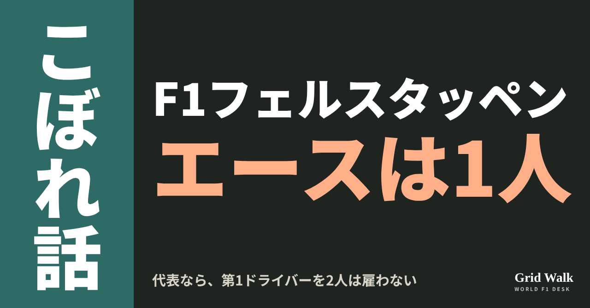<button class="cp dl" data-img="img/verstappen-two-number-ones-20261110.png" data-name="verstappen-two-number-ones-20261110_見出し画像.png">ダウンロード</button></li>
<li class="st"><div class="hd"><span class="no">2</span><b>タイトル</b></div><div class="bx" id="p1t">フェルスタッペン「代表なら、第1ドライバーを2人は決して雇わない」</div><button class="cp" data-plain="p1t">タイトルをコピー</button></li>
<li class="st"><div class="hd"><span class="no">3</span><b>本文</b></div><div class="bx tall" id="p1r"><p>「もし自分がチーム代表なら、第1ドライバーを2人は決して雇わない」。マックス・フェルスタッペン（レッドブル）が、オランダのViaplayで、フェラーリのルイス・ハミルトンとシャルル・ルクレールの争いについてこう話しました。オランダのF1Maximaalが11月9日に伝えています（記事の要約 https://f1gridwalk.github.io/news/nl-f1maximaal-verstappen-ferrari-teamboss/ ）。</p><p>元のオランダ語の記事へのリンクと、フェラーリの2人の争いのこれまでの話はサイトで → <a href="https://f1gridwalk.github.io/lens/verstappen-two-number-ones-20261110/?utm_source=note&amp;utm_campaign=verstappen-two-number-ones-20261110">https://f1gridwalk.github.io/lens/verstappen-two-number-ones-20261110/?utm_source=note&amp;utm_campaign=verstappen-two-number-ones-20261110</a></p><p>2人はモンツァのスタートでもめ、11月1日のメキシコシティGPでは1周目に首位を争ってそろってコース外へ。勝ったのはフェルスタッペンでした（https://f1gridwalk.github.io/lens/hamilton-leclerc-rift-20261107/ ）。フェルスタッペンはレース後、こう話しています。</p><blockquote><p>「2人ともナンバー1のドライバーだから、いつも攻めにいく。でも今日は、それで勝ちを逃したと思う」（フェルスタッペン、Sky Sports F1、PlanetF1／イギリス経由）</p></blockquote><h2>「これは前から何度も言ってきた」</h2><blockquote><p>「これは前から何度も言ってきました。賛成しない人も多いけれど、もし自分がチーム代表か、自分のチームを持っていたら、第1ドライバーを2人は決して雇わない。そうすると、こうなるんです」（フェルスタッペン、Viaplay／オランダ、F1Maximaal経由）</p></blockquote><p>F1Maximaalは、フェルスタッペンはフェラーリが自分でこの状況を招いていると考えている、と書いています。</p><blockquote><p>「これは普通のことです。どちらも相手に譲らない。2人とも、自分が勝てると思っているから」「僕もそういう人間です」（同）</p></blockquote><blockquote><p>「いい車があれば、第1ドライバーは2人いらない。ちゃんとしたナンバー2がいればいいんです」「F1の歴史では、それで何年もうまくいくことが、ずっと示されてきました」（同）</p></blockquote><p>記事は、その例としてフェラーリのミハエル・シューマッハ、レッドブルのセバスチャン・ベッテル、メルセデスのハミルトンを挙げています。</p><p>この考えは、いまに始まった話ではありません。2025年12月のNews.GPの記事によると、2人を対等に扱ったマクラーレンにふれて、Viaplayにこう話していました。</p><blockquote><p>「もし自分がチーム代表なら、いつも、はっきりしたナンバー1とナンバー2を選ぶ」（フェルスタッペン、Viaplay、News.GP／チェコ経由）</p></blockquote><h2>バスール「契約にはっきり書いてある」</h2><p>フェラーリの考えは、その反対です。フレデリック・バスール代表はスペインGPを前に、フランスのレキップにこう話していました。</p><blockquote><p>「私たちは、ナンバー1のドライバーを2人置くことを選びました。レースに勝てる2人です」「ルイスはそれを知っていた。契約にはっきり書いてある。戦略的な選択です」（バスール、レキップ／フランス、GPFans経由）</p></blockquote><blockquote><p>「ナンバー1とナンバー2を置くと決めるチームもあれば、ナンバー1を2人置くと決めるチームもある」「どちらにも長所と短所があります」（同）</p></blockquote><p>どちらを外すかは、フェルスタッペンは言っていません。F1Maximaalは、ルクレールの契約が2030年までだとして、フェルスタッペンが代表ならハミルトンを外す形になりそうだと見ています。ただ、フェラーリが6月に発表したルクレールの延長は「複数年」とされただけで、年数は公表されていません（Crash.net／イギリス）。</p><p>編集部としては、2人の言い分の違いは、争いの少なさを取るか、勝てる2台を取るか、という順番の違いだと見ています。残りはラスベガスからの3戦です。</p><p><strong>あなたがチーム代表なら、第1ドライバーを1人に決めますか？　それとも2人を対等に走らせますか？</strong></p><p>━━━━━━━━━━</p><p><strong>F1 Grid Walk では、世界のF1ニュースを毎日日本語でまとめています。</strong></p><p>海外の記事の要約を、毎日載せています。</p><p><a href="https://f1gridwalk.github.io/">https://f1gridwalk.github.io/</a></p><p>ほかの海外記事も読みたい方は、F1 Grid Walkへ。</p><p><a href="https://f1gridwalk.github.io/lens/verstappen-two-number-ones-20261110/">https://f1gridwalk.github.io/lens/verstappen-two-number-ones-20261110/</a></p><p>━━━━━━━━━━</p><p><a href="https://www.f1maximaal.nl/max-verstappen/verstappen-zou-hamilton-of-leclerc-wegsturen-als-teambaas-zou-ik-dit-aanpassen">出典：F1Maximaal（オランダ）</a></p><p><a href="https://www.planetf1.com/news/max-verstappen-lewis-hamilton-charles-leclerc-f1-2026-mexican-grand-prix">出典：PlanetF1（イギリス）</a></p><p><a href="https://www.news.gp/en/max-verstappen-would-have-a-clear-number-one-driver-if-he-ran-an-f1-team">出典：News.GP（チェコ）</a></p><p><a href="https://www.gpfans.com/en/f1-news/1090383/lewis-hamilton-charles-leclerc-truth-ferrari-fred-vasseur/">出典：GPFans（イギリス）</a></p><p><a href="https://www.crash.net/f1/news/1096788/1/how-long-charles-leclercs-new-ferrari-f1-contract">出典：Crash.net（イギリス）</a></p></div><button class="cp" data-rich="p1r">本文をコピー</button></li>
<li class="st"><div class="hd"><span class="no">4</span><b>ハッシュタグ</b></div><div class="bx" id="p1h">#F1 #F1jp #フェルスタッペン #フェラーリ #ハミルトン #ルクレール #バスール #サンパウロGP #F1こぼれ話 #OFFGRID</div><button class="cp" data-plain="p1h">タグをコピー</button></li>
</ol><h3 class="xh">X</h3><ol class="steps">
<li class="st im"><div class="hd"><b>X用の画像</b><em>画像</em></div>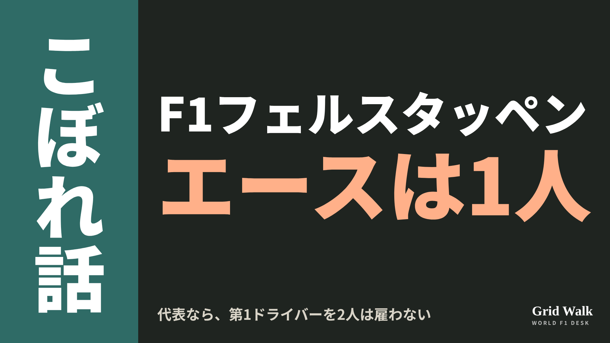<button class="cp dl" data-img="img/x_verstappen-two-number-ones-20261110.png" data-name="x_verstappen-two-number-ones-20261110.png">ダウンロード</button></li>
<li class="st"><div class="hd"><b>① noteをシェアするときの文</b></div><div class="bx" id="p1x0">フェルスタッペンが Viaplay で「自分が代表なら、第1ドライバーを2人は決して雇わない」とオランダの F1Maximaal。ハミルトンとルクレールの2人を抱えるフェラーリへの見方と、バスール代表の逆の考えをnoteにまとめました #F1jp #フェルスタッペン</div><button class="cp" data-plain="p1x0">コピー</button></li>
<li class="st"><div class="hd"><b>② ①への返信</b></div><div class="bx" id="p1x1">ほかの海外記事も読みたい方は、F1 Grid Walkへ。
https://f1gridwalk.github.io/lens/verstappen-two-number-ones-20261110/?utm_source=x&amp;utm_campaign=verstappen-two-number-ones-20261110</div><button class="cp" data-plain="p1x1">コピー</button></li>
<li class="st"><div class="hd"><b>③ ②への返信</b></div><div class="bx" id="p1x2">毎日の海外F1ニュースは、日本語でこちらにまとめています。
https://f1gridwalk.github.io/</div><button class="cp" data-plain="p1x2">コピー</button></li>
</ol></section><section class="part" id="p2"><h2><span class="tag">OFF GRID</span>ローソン残留へ、The Race報道　発表はラスベガス前の見込み</h2><p class="sub">サイトに公開：20:11</p><ol class="steps">
<li class="st im"><div class="hd"><span class="no">1</span><b>見出し画像</b><em>画像</em></div>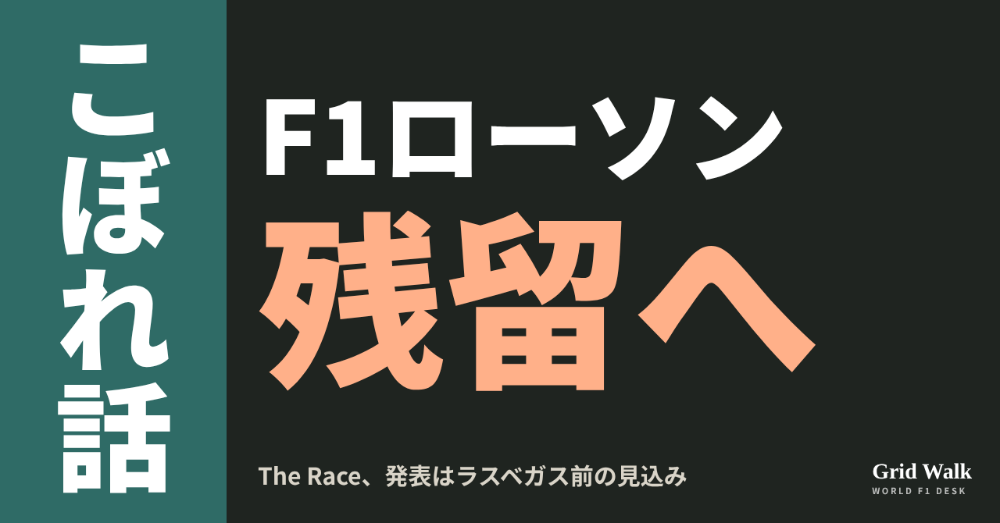<button class="cp dl" data-img="img/lawson-racing-bulls-stay-20261110.png" data-name="lawson-racing-bulls-stay-20261110_見出し画像.png">ダウンロード</button></li>
<li class="st"><div class="hd"><span class="no">2</span><b>タイトル</b></div><div class="bx" id="p2t">ローソン残留へ、The Race報道　発表はラスベガス前の見込み</div><button class="cp" data-plain="p2t">タイトルをコピー</button></li>
<li class="st"><div class="hd"><span class="no">3</span><b>本文</b></div><div class="bx tall" id="p2r"><p>リアム・ローソンは2027年もレーシングブルズに残る方向――イギリスのThe Raceが11月9日にそう報じました。正式な発表は、次のラスベガスGPの前の見込みとしています。ただし、最後の承認はまだ出ていません。サンパウロGPでのローソンは、FIAの正式結果で7位でした。2席をめぐるこれまでの報道は（https://f1gridwalk.github.io/lens/racing-bulls-seats-undecided-20261107/ ）。</p><p>The Raceの報道と、メキース代表の発言の元の記事へのリンクはサイトで → <a href="https://f1gridwalk.github.io/lens/lawson-racing-bulls-stay-20261110/?utm_source=note&amp;utm_campaign=lawson-racing-bulls-stay-20261110">https://f1gridwalk.github.io/lens/lawson-racing-bulls-stay-20261110/?utm_source=note&amp;utm_campaign=lawson-racing-bulls-stay-20261110</a></p><h2>The Raceが報じた中身</h2><p>The Raceのジョン・ノーブル記者によると、もう一つの案は、F2ランキング2位のレッドブル育成、ニコラ・ツォロフを上げることでした。アラン・パーメイン代表はローソンを推しているとされ、最後の承認はレッドブルの親会社の株主にあるものの、株主がチームの希望を覆すのは珍しい（ありえなくはない）、と書いています。</p><p>そのうえでThe Raceは自分たちの見方として、ローソンとアービッド・リンドブラッドが走り、ツォロフはチームのリザーブとして新人のフリー走行4回をすべて走る形が、筋の通った結末だろうと書いています。ローソンはドライバーズランキング9位です（The Race）。</p><p>イタリアのガゼッタ・デロ・スポルトも、最新のうわさではラスベガスの前に来るはずだと書いた、とGMM配信の記事（フランスのNextgen-Autoが掲載）が伝えています。</p><h2>メキース「レーシングブルズの決定です」</h2><p>決勝のあと、ローソンの先行きを聞かれたレッドブルのローレン・メキース代表は、まずこう答えました。</p><blockquote><p>「何度も言っていますが、レーシングブルズのドライバーの決定は、レーシングブルズを通して行われます」「リアムについては、またとても力強い週末だったと、祝福するしかありません」「すばらしい流れに乗っています」（メキース代表、PlanetF1／イギリス）</p></blockquote><p>ローソンが今季、手首をけがしたアイザック・ハジャーに代わってレッドブルで走った3戦もたたえました（PlanetF1）。自分の意見をと重ねて聞かれても、答えは同じでした。</p><blockquote><p>「いま3分かけて、これはレーシングブルズの決定だと伝えようとしたところです」「自分の意見を公に言って、それをレッドブル・レーシングの決定にしてしまうつもりはありません」「いやいや、レーシングブルズの決定です。彼らはすべてのデータを持っていて、経験も豊富です」（メキース代表、PlanetF1／イギリス）</p></blockquote><blockquote><p>「アランはすばらしい人です。たいていの人よりレースを分かっている。彼らが時間をかけるのは、たぶん妥当でしょう。レッドブルの立場からすれば、急ぐ理由はないからです」（メキース代表、PlanetF1／イギリス）</p></blockquote><h2>ローソン「もっとチームから」</h2><p>ローソン本人は、決勝のあと、パーメイン代表についてこう話しています。</p><blockquote><p>「もちろん、そこは彼らが決めることです」「アランはとても支えてくれていると感じています。すごくありがたい」「でも、まあ、大きな組織ですから」（ローソン、The Race／イギリス）</p></blockquote><p>周りからの応援について、The Raceに聞かれると、こう答えました。</p><blockquote><p>「応援はすべてありがたいです。ここ数週間、目にしてきました。正直、見ていて本当にうれしい」「もちろん、それがもっとチームからだったら、うれしいんですけどね」「でもいまは、とにかく車を走らせるのを楽しもうとしています。ほかにいろいろ起きている中で、ほかに何をすればいいのか、よく分からないので」（ローソン、The Race／イギリス）</p></blockquote><p>まだ発表はありません（サイトの要約は https://f1gridwalk.github.io/news/en-therace-lawson-closing-racingbulls-2027/ 、https://f1gridwalk.github.io/news/en-planetf1-lawson-mekies-praise-contract/ ）。</p><p><strong>発表がラスベガスの前に来たら、ローソンとリンドブラッドの2人を、あなたはどう見ますか？</strong></p><p>━━━━━━━━━━</p><p><strong>F1 Grid Walk では、世界のF1ニュースを毎日日本語でまとめています。</strong></p><p>海外の記事の要約を、毎日載せています。</p><p><a href="https://f1gridwalk.github.io/">https://f1gridwalk.github.io/</a></p><p>ほかの海外記事も読みたい方は、F1 Grid Walkへ。</p><p><a href="https://f1gridwalk.github.io/lens/lawson-racing-bulls-stay-20261110/">https://f1gridwalk.github.io/lens/lawson-racing-bulls-stay-20261110/</a></p><p>━━━━━━━━━━</p><p><a href="https://www.the-race.com/formula-1/liam-lawson-closing-on-f1-2027-racing-bulls-stay/">出典：The Race（イギリス）</a></p><p><a href="https://www.planetf1.com/news/red-bull-liam-lawson-racing-bulls-stall-contract-decision">出典：PlanetF1（イギリス）</a></p><p><a href="https://motorsport.nextgen-auto.com/en/formula-1/lawson-now-tipped-to-retain-seat-for-2027,213278.html">出典：Nextgen-Auto（GMM配信）（フランス）</a></p></div><button class="cp" data-rich="p2r">本文をコピー</button></li>
<li class="st"><div class="hd"><span class="no">4</span><b>ハッシュタグ</b></div><div class="bx" id="p2h">#F1 #F1jp #ローソン #レーシングブルズ #ツォロフ #メキース #ラスベガスGP #F1こぼれ話 #OFFGRID</div><button class="cp" data-plain="p2h">タグをコピー</button></li>
</ol><h3 class="xh">X</h3><ol class="steps">
<li class="st im"><div class="hd"><b>X用の画像</b><em>画像</em></div>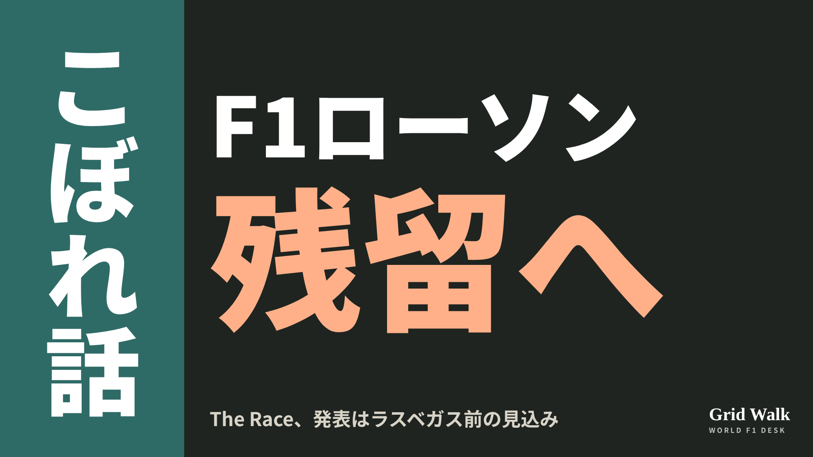<button class="cp dl" data-img="img/x_lawson-racing-bulls-stay-20261110.png" data-name="x_lawson-racing-bulls-stay-20261110.png">ダウンロード</button></li>
<li class="st"><div class="hd"><b>① noteをシェアするときの文</b></div><div class="bx" id="p2x0">ローソンは2027年もレーシングブルズに残る方向、発表はラスベガスGPの前の見込みと The Race が報じました。最後の承認はレッドブルの株主に。ツォロフの行き先も含めてnoteにまとめました #F1jp #ローソン</div><button class="cp" data-plain="p2x0">コピー</button></li>
<li class="st"><div class="hd"><b>② ①への返信</b></div><div class="bx" id="p2x1">ほかの海外記事も読みたい方は、F1 Grid Walkへ。
https://f1gridwalk.github.io/lens/lawson-racing-bulls-stay-20261110/?utm_source=x&amp;utm_campaign=lawson-racing-bulls-stay-20261110</div><button class="cp" data-plain="p2x1">コピー</button></li>
<li class="st"><div class="hd"><b>③ ②への返信</b></div><div class="bx" id="p2x2">毎日の海外F1ニュースは、日本語でこちらにまとめています。
https://f1gridwalk.github.io/</div><button class="cp" data-plain="p2x2">コピー</button></li>
</ol></section><section class="part" id="p3"><h2><span class="tag">OFF GRID</span>タイヤ次第で0.5秒　バスール「改良の多くはコンマ数秒」</h2><p class="sub">サイトに公開：20:12</p><ol class="steps">
<li class="st im"><div class="hd"><span class="no">1</span><b>見出し画像</b><em>画像</em></div>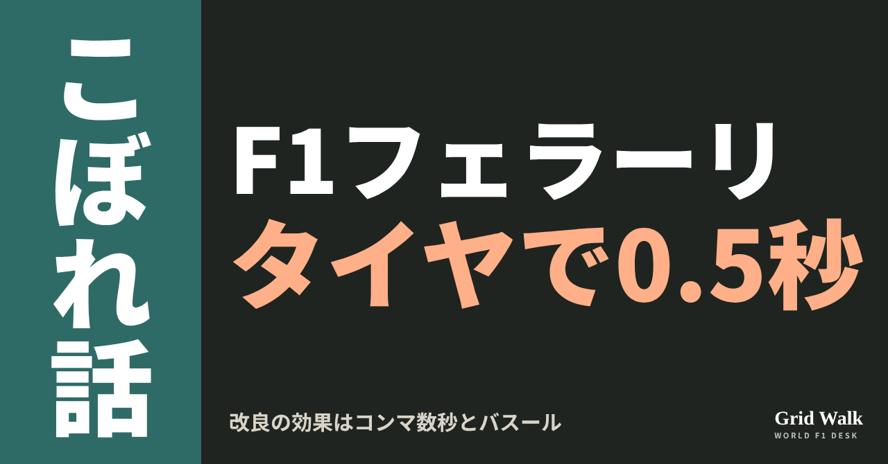<button class="cp dl" data-img="img/ferrari-sf26-investigation-20261110.png" data-name="ferrari-sf26-investigation-20261110_見出し画像.png">ダウンロード</button></li>
<li class="st"><div class="hd"><span class="no">2</span><b>タイトル</b></div><div class="bx" id="p3t">タイヤ次第で0.5秒　バスール「改良の多くはコンマ数秒」</div><button class="cp" data-plain="p3t">タイトルをコピー</button></li>
<li class="st"><div class="hd"><span class="no">3</span><b>本文</b></div><div class="bx tall" id="p3r"><p>サンパウロGPのフェラーリは、FIAの正式結果でシャルル・ルクレールが8位（5秒加算のあと）、ルイス・ハミルトンが9位。2台で6点でした。レースの中で速さが大きく上下した理由を、フレデリック・バスール代表はタイヤの温度だと説明し、その大きさを、車の改良と数字で比べています。イギリスのPlanetF1が伝えました。</p><p>元の記事へのリンクと、ハミルトンの400戦目のSTORYへの案内はサイトで → <a href="https://f1gridwalk.github.io/lens/ferrari-sf26-investigation-20261110/?utm_source=note&amp;utm_campaign=ferrari-sf26-investigation-20261110">https://f1gridwalk.github.io/lens/ferrari-sf26-investigation-20261110/?utm_source=note&amp;utm_campaign=ferrari-sf26-investigation-20261110</a></p><h2>改良はコンマ数秒、タイヤは0.5秒</h2><p>PlanetF1によると、バスール代表は、2台のタイムを大きく上下させたタイヤの問題が、この週末をよく表していると認め、笑ってこう話しました。</p><blockquote><p>「ええ、週末をうまくまとめていますね」（バスール、PlanetF1／イギリス）</p></blockquote><blockquote><p>「技術的なことを細かく話したくはありません。でも、タイヤの温度の問題が大きいのは確かです」「レースのある局面や、ある条件で、より苦しんでいます」（同）</p></blockquote><p>代表によると、その影響は、いつも車の特性よりずっと大きいといいます。</p><blockquote><p>「週末に改良を持ち込んでも、タイヤでいいところに入っていなければ、まったく戦えません。この影響の大きさは0.5秒ですが、改良やコースの特徴の多くはコンマ数秒だからです」（同）</p></blockquote><h2>後ろのタイヤは熱すぎ、ソフトは冷たすぎ</h2><p>2台の困りごとは逆でした。PlanetF1によると、ハミルトンは1周目に11台を抜きましたが、インターミディエイトで後ろのタイヤが熱を持ちすぎて、順位を落としました。ルクレールは、路面が乾いてソフトに替えたあと、タイヤの温度を十分に上げられませんでした。</p><blockquote><p>「シャルルのソフトの走り始めと、最後の2、3周とでは、大きな差がありました。最後は、新しいタイヤの人たちとほとんど同じくらい速かったんです」（バスール、PlanetF1／イギリス）</p></blockquote><p>ストレートの速さが足りないことも重なった、と代表は話しています。</p><blockquote><p>「乾いているラインが1本しかないと、とてつもなく難しい。それで後ろで詰まってしまうんです」（同）</p></blockquote><p>決勝の前、Speedweek（英語版）によると、バスール代表は、予選でハミルトンのタイヤを温存したのは降格で後ろから出る決勝のためで、雨でもフェラーリに速さがあるのは前向きな点だ、と話していました。ルクレールの5秒加算のいきさつは、ローソンのコラム https://f1gridwalk.github.io/lens/lawson-hulkenberg-second-row-20261109/ で紹介しています。</p><h2>SF-26を調べる、の元はハミルトンの投稿</h2><p>PlanetF1はもう1本の記事の見出しで、フェラーリがSF-26の調査に乗り出すと書き、本文では、ラスベガスで巻き返すために調べるとしています。記事はハミルトンがそれを認めたとしていますが、元になったのは、本人のインスタグラムの投稿です。フェラーリの発表は、記事には出てきません。</p><blockquote><p>「昨日のレースには、打ちのめされています。とくに終わり方に」「始まりはとてもよかったのに、タイヤと大きなオーバーステアに苦しみました」（ハミルトン、インスタグラム。PlanetF1／イギリス）</p></blockquote><blockquote><p>「なぜなのかを理解するために取り組み、次のレースで戦いに戻ってきます」（同）</p></blockquote><p>雨が戻った終盤のスピンと、400戦目の週末の流れはSTORY https://f1gridwalk.github.io/topics/hamilton-400th-start/ に、PlanetF1の2本の要約は https://f1gridwalk.github.io/news/en-planetf1-ferrari-pace-swings-vasseur-tyres/ と https://f1gridwalk.github.io/news/en-planetf1-hamilton-devastated-sf26-investigation/ にあります。</p><p>編集部としては、ラスベガスの前に調べる中身は、車の形よりも、タイヤを温度の幅に入れる使い方のほうが大きい、と見ています。バスール代表自身が、改良よりタイヤの影響が大きいと話しているからです。</p><p><strong>改良で得るコンマ数秒と、タイヤで失う0.5秒。あなたがフェラーリなら、ラスベガスまでに、どちらから手をつけますか？</strong></p><p>━━━━━━━━━━</p><p><strong>F1 Grid Walk では、世界のF1ニュースを毎日日本語でまとめています。</strong></p><p>海外の記事の要約を、毎日載せています。</p><p><a href="https://f1gridwalk.github.io/">https://f1gridwalk.github.io/</a></p><p>ほかの海外記事も読みたい方は、F1 Grid Walkへ。</p><p><a href="https://f1gridwalk.github.io/lens/ferrari-sf26-investigation-20261110/">https://f1gridwalk.github.io/lens/ferrari-sf26-investigation-20261110/</a></p><p>━━━━━━━━━━</p><p><a href="https://www.planetf1.com/news/ferrari-fluctuating-brazilian-gp-pace-reason-revealed">出典：PlanetF1（イギリス）</a></p><p><a href="https://www.planetf1.com/news/lewis-hamilton-ferrari-sf-26-investigation-f1-2026-brazilian-grand-prix">出典：PlanetF1（イギリス）</a></p><p><a href="https://www.speedweek.com/en/a/formula-1/ferrari-team-principal-fred-vasseur-hamilton-from-p20-to-the-sao-paulo-podium-">出典：Speedweek（英語版）（オーストリア）</a></p></div><button class="cp" data-rich="p3r">本文をコピー</button></li>
<li class="st"><div class="hd"><span class="no">4</span><b>ハッシュタグ</b></div><div class="bx" id="p3h">#F1 #F1jp #フェラーリ #ハミルトン #ルクレール #バスール #サンパウロGP #ラスベガスGP #F1こぼれ話 #OFFGRID</div><button class="cp" data-plain="p3h">タグをコピー</button></li>
</ol><h3 class="xh">X</h3><ol class="steps">
<li class="st im"><div class="hd"><b>X用の画像</b><em>画像</em></div>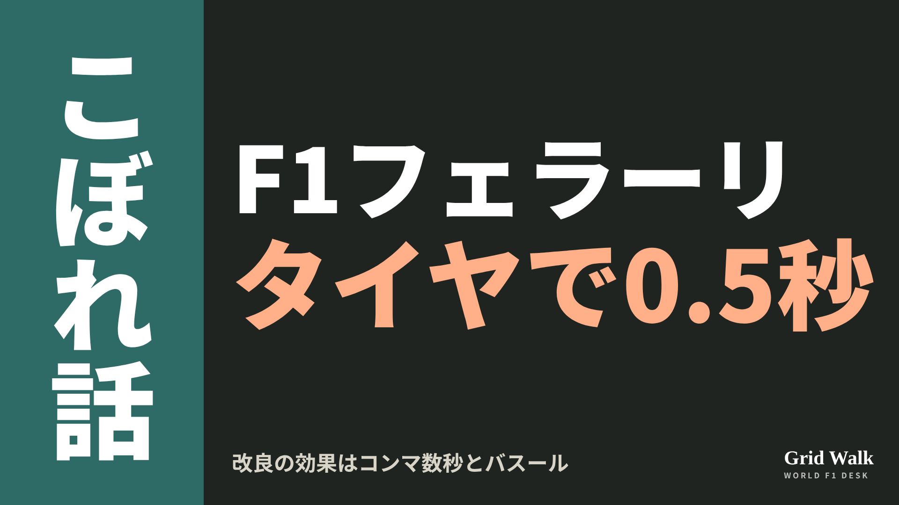<button class="cp dl" data-img="img/x_ferrari-sf26-investigation-20261110.png" data-name="x_ferrari-sf26-investigation-20261110.png">ダウンロード</button></li>
<li class="st"><div class="hd"><b>① noteをシェアするときの文</b></div><div class="bx" id="p3x0">サンパウロで8位と9位のフェラーリ。バスール代表は、タイヤの温度しだいで0.5秒、改良の効果の多くはコンマ数秒と説明しました。ハミルトンとルクレールで逆だった困りごとをnoteにまとめました #F1jp #フェラーリ</div><button class="cp" data-plain="p3x0">コピー</button></li>
<li class="st"><div class="hd"><b>② ①への返信</b></div><div class="bx" id="p3x1">ほかの海外記事も読みたい方は、F1 Grid Walkへ。
https://f1gridwalk.github.io/lens/ferrari-sf26-investigation-20261110/?utm_source=x&amp;utm_campaign=ferrari-sf26-investigation-20261110</div><button class="cp" data-plain="p3x1">コピー</button></li>
<li class="st"><div class="hd"><b>③ ②への返信</b></div><div class="bx" id="p3x2">毎日の海外F1ニュースは、日本語でこちらにまとめています。
https://f1gridwalk.github.io/</div><button class="cp" data-plain="p3x2">コピー</button></li>
</ol></section><section class="part" id="p4"><h2><span class="tag">OFF GRID</span>ウォルフ1000語のメール、副代表がLinkedInで公開</h2><p class="sub">サイトに公開：20:13</p><ol class="steps">
<li class="st im"><div class="hd"><span class="no">1</span><b>見出し画像</b><em>画像</em></div>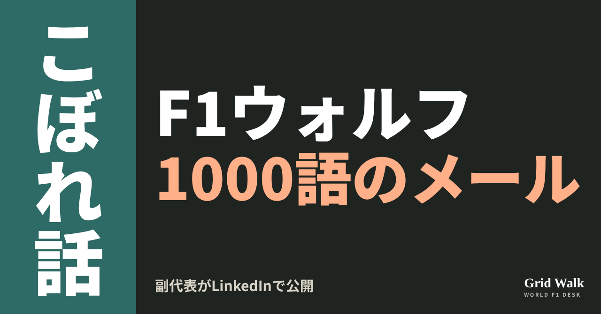<button class="cp dl" data-img="img/wolff-staff-email-20261110.png" data-name="wolff-staff-email-20261110_見出し画像.png">ダウンロード</button></li>
<li class="st"><div class="hd"><span class="no">2</span><b>タイトル</b></div><div class="bx" id="p4t">ウォルフ1000語のメール、副代表がLinkedInで公開</div><button class="cp" data-plain="p4t">タイトルをコピー</button></li>
<li class="st"><div class="hd"><span class="no">3</span><b>本文</b></div><div class="bx tall" id="p4r"><p>メキシコシティGPでアントネッリが王座を決めたあと、メルセデスのトト・ウォルフ代表は、チームの全員にメールを送りました。長さは、本人いわく約1000語。社内向けだったそのメールは、ブラッドリー・ロード副代表が自分のLinkedInに載せたことで、外にも広まりました。</p><p>ウォルフ代表の発言の訳と、元の記事へのリンクはサイトで → <a href="https://f1gridwalk.github.io/lens/wolff-staff-email-20261110/?utm_source=note&amp;utm_campaign=wolff-staff-email-20261110">https://f1gridwalk.github.io/lens/wolff-staff-email-20261110/?utm_source=note&amp;utm_campaign=wolff-staff-email-20261110</a></p><h2>書き出しは、古いことわざ</h2><p>イギリスのPlanetF1によると、メールはこう始まります。</p><blockquote><p>「成功には多くの父親がいる。失敗は孤児だ」（ウォルフのメール、PlanetF1／イギリス）</p></blockquote><p>20歳で史上最年少の王者になったアントネッリを、ハミルトンの後任として2025年にF1へ上げたのはウォルフ代表です。メールでは、多くの人のものである話なのに、自分があまりにも多くの功績を認められている、と書いています（PlanetF1）。</p><p>名前を挙げたのは、レースエンジニアのピーター・ボニントン（ボノ）、テクニカルディレクターのジェームズ・アリソン、チームの取締役会、スポンサー、そしてジョージ・ラッセルなど。アリソンについては、アントネッリを乗せる案を出したとき、自分の判断を信じて支えてくれたと、特に感謝しています。苦しい時期の批判にも触れ、若いドライバーに学べと言いながら、ミスをしたら罰することはできない、とも書いています（同）。締めくくりはこうです。</p><blockquote><p>「これは私の成功物語ではない。私たちのものだ」（ウォルフのメール、PlanetF1／イギリス）</p></blockquote><h2>司会者は流出と呼んだ</h2><p>サンパウロGPの週末、イギリスのSky Sports F1で、司会のサイモン・レイゼンビーがこの話を持ち出しました。</p><blockquote><p>「トト、あなたの副代表が、あなたがチームのほかのみんなに送ったメールを流出させましたね」（レイゼンビー、PlanetF1／イギリス）</p></blockquote><p>ウォルフ代表は、まず長さの話から始めました。</p><blockquote><p>「1000語だった。驚いたよ。最後にあれだけ書いたのは、学校でひどく追い込まれていたときだ」（ウォルフ、GPblog／オランダ）</p></blockquote><p>書いた理由は、こう説明しています。</p><blockquote><p>「書いたのは思い立ってのことだった。あの日曜の夜、彼にチャンスを与えたことで、すごく褒められたから」「でも、もしかするとそれほどスポットライトが当たっていなかった人たちみんなに、功績を認めなければと感じた」（同）</p></blockquote><blockquote><p>「このメールでも、まだ足りていない。決める過程に関わった人は、もっとたくさんいる」（同）</p></blockquote><p>では、なぜ外に出たのか。</p><blockquote><p>「ブラッドリーが、いつもより気の利いたメールだと思って、LinkedInに載せた。それで広まった」（同）</p></blockquote><p>流出は司会者の言い方で、実際は副代表が自分で公開したものです（PlanetF1、GPblog）。PlanetF1の記事は、サイトの要約（https://f1gridwalk.github.io/news/en-planetf1-wolff-leaked-email-antonelli/ ）からも読めます。</p><h2>チームの王座は、ボーナスにも</h2><p>同じ週末、メルセデスはチームの王座も決めました（コラム https://f1gridwalk.github.io/lens/mercedes-constructors-title-won-20261109/ ）。ウォルフ代表は、ドライバーの王座と比べてチームの王座はどうかと聞かれ、こう答えています。</p><blockquote><p>「私たちは自動車メーカーだから、最高のコンストラクターであることも、とても大事だ。それに、ボーナスの支払いにもつながる」「根本的に、それがうちの全員にとって違いを生む」（ウォルフ、PlanetF1／イギリス）</p></blockquote><p>編集部としては、ドライバーの王座では裏方の名前を並べ、チームの王座ではボーナスの話をしたウォルフ代表は、どちらの場面でも、工場やガレージで働く人たちに向けて話していたと見ています。</p><p><strong>社内向けのお礼のメールを、副代表がSNSで公開する。あなたは、ありだと思いますか？</strong></p><p>━━━━━━━━━━</p><p><strong>F1 Grid Walk では、世界のF1ニュースを毎日日本語でまとめています。</strong></p><p>海外の記事の要約を、毎日載せています。</p><p><a href="https://f1gridwalk.github.io/">https://f1gridwalk.github.io/</a></p><p>ほかの海外記事も読みたい方は、F1 Grid Walkへ。</p><p><a href="https://f1gridwalk.github.io/lens/wolff-staff-email-20261110/">https://f1gridwalk.github.io/lens/wolff-staff-email-20261110/</a></p><p>━━━━━━━━━━</p><p><a href="https://www.planetf1.com/news/toto-wolff-mercedes-email-kimi-antonelli">出典：PlanetF1（イギリス）</a></p><p><a href="https://www.planetf1.com/news/wolff-email-to-mercedes-staff-after-kimi-antonelli-title-win-revealed">出典：PlanetF1（イギリス）</a></p><p><a href="https://sports.yahoo.com/articles/wolff-sheds-light-private-mercedes-073000777.html">出典：GPblog（Yahoo Sportsに転載）（オランダ）</a></p></div><button class="cp" data-rich="p4r">本文をコピー</button></li>
<li class="st"><div class="hd"><span class="no">4</span><b>ハッシュタグ</b></div><div class="bx" id="p4h">#F1 #F1jp #ウォルフ #メルセデス #アントネッリ #ブラッドリーロード #サンパウロGP #F1こぼれ話 #OFFGRID</div><button class="cp" data-plain="p4h">タグをコピー</button></li>
</ol><h3 class="xh">X</h3><ol class="steps">
<li class="st im"><div class="hd"><b>X用の画像</b><em>画像</em></div>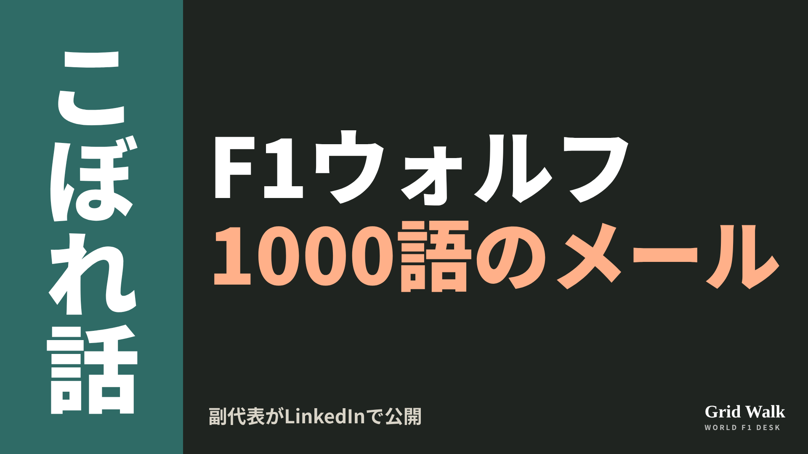<button class="cp dl" data-img="img/x_wolff-staff-email-20261110.png" data-name="x_wolff-staff-email-20261110.png">ダウンロード</button></li>
<li class="st"><div class="hd"><b>① noteをシェアするときの文</b></div><div class="bx" id="p4x0">アントネッリの王座のあと、ウォルフ代表が全社員に送った約1000語のメール。ロード副代表がLinkedInで公開しました。表に出ない人たちへの感謝と、チームの王座の意味をnoteにまとめました #F1jp #メルセデス</div><button class="cp" data-plain="p4x0">コピー</button></li>
<li class="st"><div class="hd"><b>② ①への返信</b></div><div class="bx" id="p4x1">ほかの海外記事も読みたい方は、F1 Grid Walkへ。
https://f1gridwalk.github.io/lens/wolff-staff-email-20261110/?utm_source=x&amp;utm_campaign=wolff-staff-email-20261110</div><button class="cp" data-plain="p4x1">コピー</button></li>
<li class="st"><div class="hd"><b>③ ②への返信</b></div><div class="bx" id="p4x2">毎日の海外F1ニュースは、日本語でこちらにまとめています。
https://f1gridwalk.github.io/</div><button class="cp" data-plain="p4x2">コピー</button></li>
</ol></section><section class="part" id="p5"><h2><span class="tag">OFF GRID</span>ラッセルが会見を途中退席と司会者　「ジョージ、落ち着かないと」</h2><p class="sub">サイトに公開：20:14</p><ol class="steps">
<li class="st im"><div class="hd"><span class="no">1</span><b>見出し画像</b><em>画像</em></div>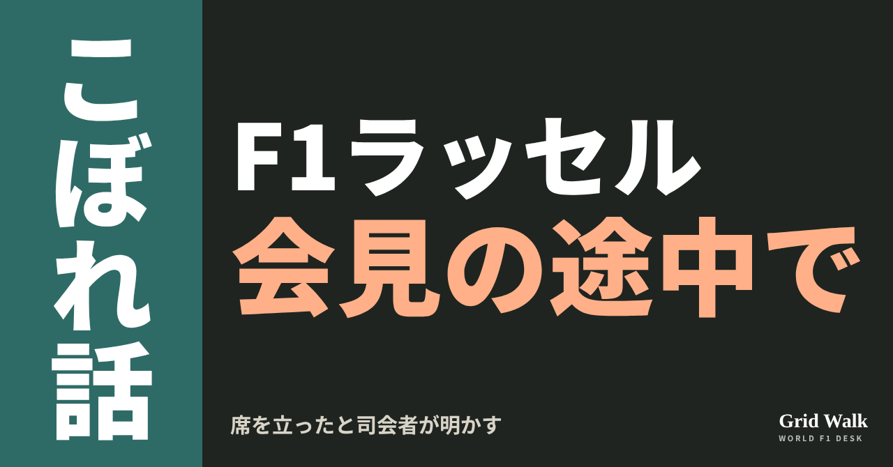<button class="cp dl" data-img="img/russell-press-conference-walkout-20261110.png" data-name="russell-press-conference-walkout-20261110_見出し画像.png">ダウンロード</button></li>
<li class="st"><div class="hd"><span class="no">2</span><b>タイトル</b></div><div class="bx" id="p5t">ラッセルが会見を途中退席と司会者　「ジョージ、落ち着かないと」</div><button class="cp" data-plain="p5t">タイトルをコピー</button></li>
<li class="st"><div class="hd"><span class="no">3</span><b>本文</b></div><div class="bx tall" id="p5r"><p>サンパウロGPの予選のあとのFIA会見で、ジョージ・ラッセル（メルセデス）が途中で席を立った――。会見の司会を務めたトム・クラークソンがポッドキャストF1 Nationでそう話し、英PlanetF1とオランダのRacingNews365が伝えました。</p><p>Q3の無線とメキシコの夜のコラム、元の記事へのリンクはサイトで → <a href="https://f1gridwalk.github.io/lens/russell-press-conference-walkout-20261110/?utm_source=note&amp;utm_campaign=russell-press-conference-walkout-20261110">https://f1gridwalk.github.io/lens/russell-press-conference-walkout-20261110/?utm_source=note&amp;utm_campaign=russell-press-conference-walkout-20261110</a></p><h2>最後の質問は、あの無線</h2><p>Q3でラッセルはチームの指示で速いラップをやめ、そのあと雨が強まって2番手に終わりました。トト・ウォルフ代表との無線のやりとりは、11月8日のコラム（https://f1gridwalk.github.io/lens/russell-aborted-lap-20261108/ ）で取り上げています。</p><p>PlanetF1によると、会見でラッセルは、ポールに届くタイムが出ていれば自分にとって大きな意味があったが、エンジン交換による5グリッド降格を考えれば、大きな流れの中では意味がないと受け止めている、と話しました。クラークソンはそこで、ウォルフ代表の無線について重ねて聞きます。PlanetF1は、それが会見でラッセルが答えた最後の質問になったと書いています。</p><blockquote><p>「彼が走り切らなかったあのラップについて、私が質問していた」（クラークソン、F1 Nation／RacingNews365・オランダ）</p></blockquote><blockquote><p>「彼は会見がまだ続いているのに、実際に途中で出て行った。もうたくさんだ、という感じだった。もうたくさんだったんだ」（クラークソン、F1 Nation／PlanetF1・イギリス）</p></blockquote><blockquote><p>「会見のあと、ただこう思った。『ジョージ、落ち着かないと。このままだと、これが君をむしばみ始めるから』。そして決勝で何が起きたかは、みんなが見たとおりだ」（同）</p></blockquote><p>決勝のラッセルは、ピットを出るところでスピンしながら4位でした（FIAの正式結果）。スピンのことは11月9日のコラム（https://f1gridwalk.github.io/lens/mercedes-strange-spins-20261109/ ）で。</p><h2>ヒンチクリフ「重荷をまだ背負っている」</h2><p>共同司会は、インディカーで何度も勝ったジェームズ・ヒンチクリフです。</p><blockquote><p>「それが問題なんだと思う。それが浮き彫りにしているのは、今年起きたすべてのことを、彼がまだ乗り越えられていないということだと思う」「彼はまだ、自分がF1マシンをポールに乗せられることを証明しなきゃいけない、という思いにしがみついている。彼がまだポールを取れることを、疑っている人はいないと思う」（ヒンチクリフ、F1 Nation／PlanetF1・イギリス）</p></blockquote><blockquote><p>「彼はただ、自分を信じ続けて、自分がここにいるのには理由があると知って、今年のことを本当に過去にしようとする必要がある。もしそれが不満の正体なら、ここまでの19戦の重荷をまだ背負っているということだから」（同）</p></blockquote><h2>1週間で2度目</h2><p>RacingNews365は、ラッセルがメディア対応の務めをすべては果たさなかったのは、この1週間で2度目だと書いています。1度目は11月1日のメキシコシティGP。チームメイトのアンドレア・キミ・アントネッリが王座を決めた夜、ラッセルは決勝後の取材に出ずにサーキットを去り、メルセデスに罰金が科されました（https://f1gridwalk.github.io/lens/russell-left-circuit-20261102/ ）。</p><p>F1公式の順位表では、ラッセルはいま262点で3位。2位のマックス・フェルスタッペン（279点）とは17点差で、PlanetF1は残りを最大3戦としています。</p><p>PlanetF1とRacingNews365の記事には、会見を途中で出たという話についてのラッセル本人とメルセデスの説明は載っていません。途中で出たのかどうか、出たならなぜなのかは、本人が話すまで分かりません。編集部としては、いま言えるのは司会者の目にそう映ったというところまでだと見ています。元の記事の要約は https://f1gridwalk.github.io/news/en-planetf1-russell-press-conference-walkout/ にあります。</p><p><strong>無線のことを重ねて聞く司会者と、そのあと席を立ったと語られたドライバー。あなたはこの場面を、どう見ますか？</strong></p><p>━━━━━━━━━━</p><p><strong>F1 Grid Walk では、世界のF1ニュースを毎日日本語でまとめています。</strong></p><p>海外の記事の要約を、毎日載せています。</p><p><a href="https://f1gridwalk.github.io/">https://f1gridwalk.github.io/</a></p><p>ほかの海外記事も読みたい方は、F1 Grid Walkへ。</p><p><a href="https://f1gridwalk.github.io/lens/russell-press-conference-walkout-20261110/">https://f1gridwalk.github.io/lens/russell-press-conference-walkout-20261110/</a></p><p>━━━━━━━━━━</p><p><a href="https://www.planetf1.com/news/george-russell-fia-press-conference-f1-2026-brazilian-grand-prix">出典：PlanetF1（イギリス）</a></p><p><a href="https://racingnews365.com/george-russell-walked-out-of-fia-press-conference-i-thought-you-need-to-chill">出典：RacingNews365（オランダ）</a></p><p><a href="https://www.fia.com/system/files/decision-document/2026_sao_paulo_grand_prix_-_final_race_classification.pdf">出典：FIA（国際）</a></p><p><a href="https://www.formula1.com/en/results/2026/drivers">出典：F1公式サイト（イギリス）</a></p></div><button class="cp" data-rich="p5r">本文をコピー</button></li>
<li class="st"><div class="hd"><span class="no">4</span><b>ハッシュタグ</b></div><div class="bx" id="p5h">#F1 #F1jp #ラッセル #メルセデス #サンパウロGP #インテルラゴス #FIA会見 #F1Nation #F1こぼれ話 #OFFGRID</div><button class="cp" data-plain="p5h">タグをコピー</button></li>
</ol><h3 class="xh">X</h3><ol class="steps">
<li class="st im"><div class="hd"><b>X用の画像</b><em>画像</em></div>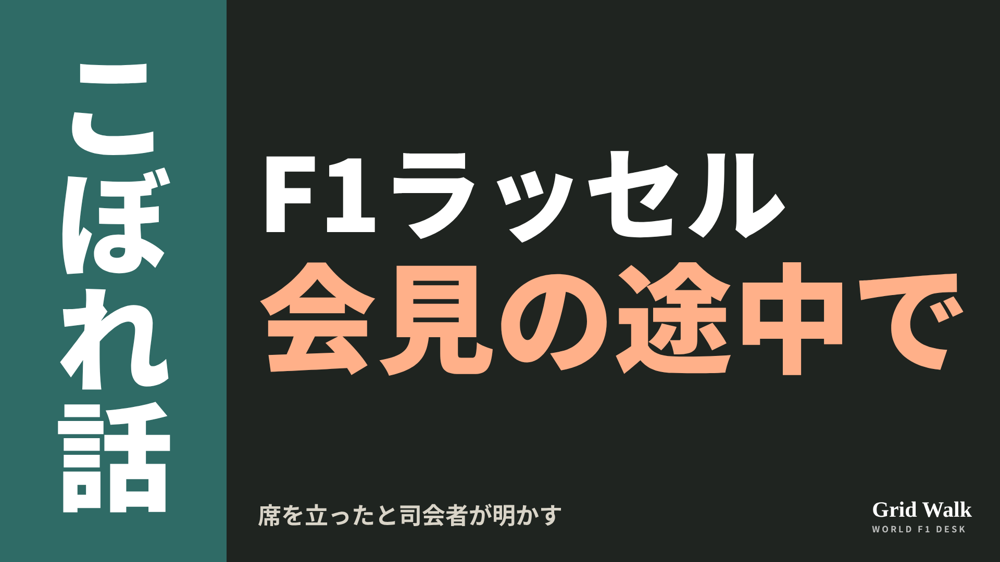<button class="cp dl" data-img="img/x_russell-press-conference-walkout-20261110.png" data-name="x_russell-press-conference-walkout-20261110.png">ダウンロード</button></li>
<li class="st"><div class="hd"><b>① noteをシェアするときの文</b></div><div class="bx" id="p5x0">サンパウロのFIA会見で、ラッセルが途中で席を立ったとF1 Nationで司会者が話しました。本人の説明はまだ見当たりません。土曜からの流れをnoteにまとめました #F1jp #ラッセル</div><button class="cp" data-plain="p5x0">コピー</button></li>
<li class="st"><div class="hd"><b>② ①への返信</b></div><div class="bx" id="p5x1">ほかの海外記事も読みたい方は、F1 Grid Walkへ。
https://f1gridwalk.github.io/lens/russell-press-conference-walkout-20261110/?utm_source=x&amp;utm_campaign=russell-press-conference-walkout-20261110</div><button class="cp" data-plain="p5x1">コピー</button></li>
<li class="st"><div class="hd"><b>③ ②への返信</b></div><div class="bx" id="p5x2">毎日の海外F1ニュースは、日本語でこちらにまとめています。
https://f1gridwalk.github.io/</div><button class="cp" data-plain="p5x2">コピー</button></li>
</ol></section><section class="part" id="p6"><h2><span class="tag">OFF GRID</span>アントネッリの無線にクルサード「エンジニアは心を読めない」</h2><p class="sub">サイトに公開：20:15</p><ol class="steps">
<li class="st im"><div class="hd"><span class="no">1</span><b>見出し画像</b><em>画像</em></div>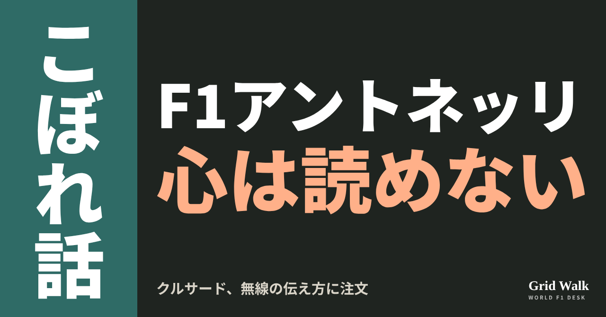<button class="cp dl" data-img="img/antonelli-radio-coulthard-20261110.png" data-name="antonelli-radio-coulthard-20261110_見出し画像.png">ダウンロード</button></li>
<li class="st"><div class="hd"><span class="no">2</span><b>タイトル</b></div><div class="bx" id="p6t">アントネッリの無線にクルサード「エンジニアは心を読めない」</div><button class="cp" data-plain="p6t">タイトルをコピー</button></li>
<li class="st"><div class="hd"><span class="no">3</span><b>本文</b></div><div class="bx tall" id="p6r"><p>サンパウロGPを5位で終えた、王者アンドレア・キミ・アントネッリ。そのレース中の無線に、元F1ドライバーのデイビッド・クルサードが注文をつけたと、オランダのF1Maximaalが伝えています。「エンジニアは心を読めない」。一方、ウィル・バクストンは、若さと経験の少なさを挙げています。</p><p>F1Maximaalの元の記事と、無線の中身をまとめた読み解きへのリンクはサイトで → <a href="https://f1gridwalk.github.io/lens/antonelli-radio-coulthard-20261110/?utm_source=note&amp;utm_campaign=antonelli-radio-coulthard-20261110">https://f1gridwalk.github.io/lens/antonelli-radio-coulthard-20261110/?utm_source=note&amp;utm_campaign=antonelli-radio-coulthard-20261110</a></p><p>スピンと、メルセデス2台の不調の中身は https://f1gridwalk.github.io/lens/mercedes-strange-spins-20261109/ と https://f1gridwalk.github.io/lens/mercedes-constructors-title-won-20261109/ で。実際の無線の言葉は、読み解き https://f1gridwalk.github.io/topics/antonelli-something-is-weird/ にまとめています。</p><h2>クルサード「ヒントをくれ、キミ」</h2><p>F1Maximaalによると、クルサードが注文をつけたのは、アントネッリの無線での伝え方です。どの番組での発言かは書かれていません。</p><blockquote><p>「彼はある時点で無線に出て、クルマで何か変なことが起きている、と言った」「でも、それならヒントをくれ、キミ」「右のリアに何か変なことがあるのか、ブレーキングなのか、エンジンなのか」「エンジニアは心を読めない」（クルサード、F1Maximaal／オランダ）</p></blockquote><blockquote><p>「ただ『ブラブラブラ』と言うわけにはいかない。もっと細かく伝えないといけない」「世界チャンピオンでも、チームにいちばんいいチャンスを与えるために、言いたいことをはっきり言わないといけない」（クルサード、F1Maximaal／オランダ）</p></blockquote><p>同誌によると、アントネッリはサスペンションを疑いましたが、データに問題の手がかりはありませんでした。メルセデスは、リアの不安定さを引き続き調べるとしています。</p><h2>バクストン「僕らは時々忘れる」</h2><p>バクストンは、英Globalの番組Up To Speedで、アントネッリのレースエンジニア、ピーター・ボニントンの声かけを振り返りました。</p><blockquote><p>「ピーター・ボニントンは、彼を落ち着かせようとしていた。リセットしないといけない。これを頭から追い出せ」「クルマのせいじゃない、タイヤのせいだ」「温度を入れて、攻めろ。自分でどんどん緊張を高めているから」（バクストン、Up To Speed。F1Maximaal／オランダ）</p></blockquote><p>ボニントンの話は読み解き https://f1gridwalk.github.io/topics/bono-leave-that-to-me/ で。バクストンは、こうも話しています。</p><blockquote><p>「キミの経験がどれだけ少ないか、どれだけ若いかを、僕らは時々忘れる」「ルイス・ハミルトンやマックス・フェルスタッペン、フェルナンド・アロンソが力を発揮する、膨大な数の場面を、彼はまだ経験していない」（バクストン、Up To Speed。F1Maximaal／オランダ）</p></blockquote><p>F1Maximaalによると、バクストンにとってこれは言い訳ではなく説明で、学ぶのが早いアントネッリなら、難しい午後から多くを得られると見ています。</p><h2>感情は消さずに、短く</h2><p>クルサードも、感情を持つなと言っているわけではありません。</p><blockquote><p>「感情はできるだけコントロールしないといけない。消す必要はない」「でも、チームに何が必要かは、はっきり、短く伝えないといけない」（クルサード、F1Maximaal／オランダ）</p></blockquote><p>レース後、本人は英Sky Sports F1にこう話しています。</p><blockquote><p>「クルマの、リアのジオメトリーで、何かを確かめないといけない」「この問題は、左コーナーでだけ起きていたから」（アントネッリ、Sky Sports F1。Motorsport Week／イギリス）</p></blockquote><p>編集部としては、2人の言うことはぶつかっていないと見ています。クルサードは何を伝えるべきか、バクストンはなぜそれがまだ難しいかの話です。リアや左コーナーといった言葉を、走りながらどこまで短く無線に乗せられるか。そこは経験で変わるのかもしれません。</p><p><strong>無線で、クルマで何か変なことが起きている、と言われたら。あなたはクルサードの注文と、バクストンの見方、どちらに近いですか？</strong></p><p>━━━━━━━━━━</p><p><strong>F1 Grid Walk では、世界のF1ニュースを毎日日本語でまとめています。</strong></p><p>海外の記事の要約を、毎日載せています。</p><p><a href="https://f1gridwalk.github.io/">https://f1gridwalk.github.io/</a></p><p>ほかの海外記事も読みたい方は、F1 Grid Walkへ。</p><p><a href="https://f1gridwalk.github.io/lens/antonelli-radio-coulthard-20261110/">https://f1gridwalk.github.io/lens/antonelli-radio-coulthard-20261110/</a></p><p>━━━━━━━━━━</p><p><a href="https://www.f1maximaal.nl/formule-1/antonelli-krijgt-stevige-kritiek-na-race-in-sao-paulo-de-engineer-kan-geen-gedachten-lezen">出典：F1Maximaal（オランダ）</a></p><p><a href="https://www.motorsportweek.com/2026/11/09/kimi-antonelli-mercedes-anger/">出典：Motorsport Week（イギリス）</a></p><p><a href="https://www.capitalxtra.com/news/global-formula-1-podcast-up-to-speed">出典：Capital XTRA（Global）（イギリス）</a></p></div><button class="cp" data-rich="p6r">本文をコピー</button></li>
<li class="st"><div class="hd"><span class="no">4</span><b>ハッシュタグ</b></div><div class="bx" id="p6h">#F1 #F1jp #アントネッリ #クルサード #メルセデス #サンパウロGP #チーム無線 #F1こぼれ話 #OFFGRID</div><button class="cp" data-plain="p6h">タグをコピー</button></li>
</ol><h3 class="xh">X</h3><ol class="steps">
<li class="st im"><div class="hd"><b>X用の画像</b><em>画像</em></div>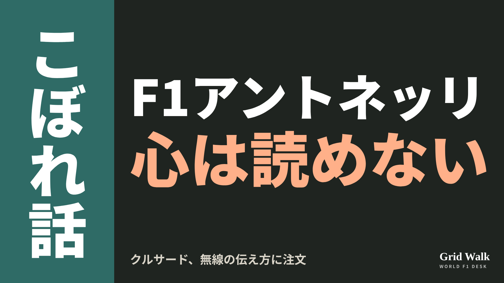<button class="cp dl" data-img="img/x_antonelli-radio-coulthard-20261110.png" data-name="x_antonelli-radio-coulthard-20261110.png">ダウンロード</button></li>
<li class="st"><div class="hd"><b>① noteをシェアするときの文</b></div><div class="bx" id="p6x0">アントネッリの無線について、クルサードが伝え方に注文をつけたとオランダのF1Maximaal。バクストンは若さと経験の少なさを挙げています。20歳の王者の伝え方をnoteにまとめました #F1jp #アントネッリ</div><button class="cp" data-plain="p6x0">コピー</button></li>
<li class="st"><div class="hd"><b>② ①への返信</b></div><div class="bx" id="p6x1">ほかの海外記事も読みたい方は、F1 Grid Walkへ。
https://f1gridwalk.github.io/lens/antonelli-radio-coulthard-20261110/?utm_source=x&amp;utm_campaign=antonelli-radio-coulthard-20261110</div><button class="cp" data-plain="p6x1">コピー</button></li>
<li class="st"><div class="hd"><b>③ ②への返信</b></div><div class="bx" id="p6x2">毎日の海外F1ニュースは、日本語でこちらにまとめています。
https://f1gridwalk.github.io/</div><button class="cp" data-plain="p6x2">コピー</button></li>
</ol></section></main><script>
function done(b,msg){const t=b.dataset.t||b.textContent;b.dataset.t=t;b.classList.add('ok');b.textContent=msg||'コピーしました';setTimeout(()=>{b.classList.remove('ok');b.textContent=t},2000)}
function selectEl(el){const r=document.createRange();r.selectNodeContents(el);const s=getSelection();s.removeAllRanges();s.addRange(r)}
async function rich(el,b){
  try{await navigator.clipboard.write([new ClipboardItem({'text/html':new Blob([el.innerHTML],{type:'text/html'}),'text/plain':new Blob([el.innerText],{type:'text/plain'})})]);done(b);return}catch(e){}
  selectEl(el);let ok=false;try{ok=document.execCommand('copy')}catch(e){}
  if(ok){getSelection().removeAllRanges();done(b)}else{done(b,'選択しました。コピーしてください')}}
async function plain(el,b){
  try{await navigator.clipboard.writeText(el.innerText);done(b);return}catch(e){}
  selectEl(el);let ok=false;try{ok=document.execCommand('copy')}catch(e){}
  if(ok){getSelection().removeAllRanges();done(b)}else{done(b,'選択しました。コピーしてください')}}
let dlns=null;(async()=>{try{dlns=await window.claude?.use?.("downloads")}catch(e){dlns=null}})();
async function img(src,b){
  b.dataset.t=b.dataset.t||b.textContent;
  if(!dlns){try{dlns=await window.claude?.use?.("downloads")}catch(e){}}
  if(!dlns){b.textContent='ダウンロードできませんでした';setTimeout(()=>{b.textContent=b.dataset.t},3500);return}
  try{const blob=await fetch(src).then(r=>r.blob());b.textContent='保存の確認を開いています…';
    await dlns.save({filename:b.dataset.name,data:blob});done(b,'ダウンロードしました')}
  catch(e){const c=e&&e.code;b.textContent=c==='declined'?'キャンセルしました':c==='rate_limited'?'少し待ってからもう一度押してください':'ダウンロードできませんでした';setTimeout(()=>{b.textContent=b.dataset.t},3500)}}
document.querySelectorAll('.cp').forEach(b=>b.addEventListener('click',()=>{
  if(b.dataset.rich)rich(document.getElementById(b.dataset.rich),b);
  else if(b.dataset.plain)plain(document.getElementById(b.dataset.plain),b);
  else img(b.dataset.img,b)}));
</script>